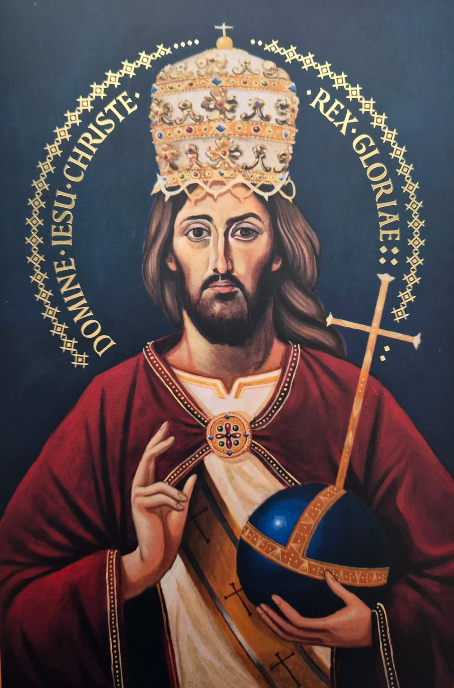

31Para tudo há um tempo, para cada coisa há um momento debaixo do céu:
Será que só o que nos resta é uma subordinação absoluta aos fatores externos da nossa vida?
Será que somos o produto unicamente dos nossos sofrimentos que a realidade nos impõe?
Será que a separação dos pais é um fator que por si só causa sofrimento no filho de forma a moldar o seu caráter de forma total e irreversível?
Será que num campo de concentração os fatores sociais, físicos e psicológicos são os únicos que influenciam a vida do apático, faminto e irritadiço preso?
Será que quando toda a minha liberdade for tolida de forma opressiva não me restará mais nada?
Se a resposta for sim, então a vida não vale a pena, então o sofrimento não vale a pena. A vida não valeria a pena ser vivido porque o sofrimento não teria sentido.
Mas a resposta é sempre “não”.
Apesar de tudo, sempre nos resta uma realidade interior, uma vida interior que preserva a pessoa e mantém o seu EU intacto.
Apesar de todo o sofrimento e de suas consequências, ainda é possível ser um alguém particular, é possível simplesmente ser.
É a maneira com que encaramos o exterior, o sofrimento, que determinará se sucumbiremos a ele ou se preservaremos a nossa individualidade e dignidade humana.
Ou sucumbimos e a vida não tem sentido ou olhamos para dentro de nós mesmos e refletiremos sobre nossa dignidade e damos sentido ao sofrimento, à vida.
Um minuto ou um segundo de vida digna, a qual guardamos mesmo um piscar de vida interior, um “desinteresse” pelo sofrimento, vale muito mais que anos de vida em que se vive apenas as preocupações externas, que nos derrotam pouco a pouco.
Devemos caminhar por este vale de lágrimas com a cabeça erguida e o coração como que entre as mãos.
Enfim, a vida vale a pena quando o sofrimento tem um sentido, qual seja, de purificação.
Normalmente os casamentos não dão certo porque os noivos não vivem ele como um Sacramento: vivem como um casamento unicamente de direito civil e este é condenado quase sempre ao fracasso.
O casamento de direito natural, o antigo “se juntar”, não dá oportunidade à vida espiritual do casal porque não trás consigo a graça sacramental.
No casamento enquanto Sacramento, que tem por base o Batismo, o esposo deve amar a esposa como Cristo amou a Igreja e a esposa deve amar o marido como Maria amou o Cristo.
Estas realidades somente encontramos na Igreja Católica onde o casamento é Sacramento, onde os esposos treinam, amando-se, a amar a Deus. Porque o amor do Sacramento é o mesmo amor da Trindade.
E quem não é casado deve amar a castidade como o mártir ama a morte.
Entre os desejos “que você tenha uma vida longa” e “descanse em paz”, qual você preferiria que fosse destinada para você?
É um problema a ser pensado no mais íntimo do nosso ser. Um problema individual, sem dúvida.
Por um lado, viver muito é tempo suficiente para pecar muito.
Por outro lado, viver pouco pode toler nossa possibilidade de conversão. Assim, viver bastante é o que muitos precisam para que tomem consciência da má vida que levam e se convertam ao bem.
Para outros, entretanto, todo o tempo será insuficiente para mudanças.
Descanse em paz! Assusta... mas é o que realmente importa e o que necessitamos. Vivendo muito ou vivendo pouco, se faz necessário descansar em paz.